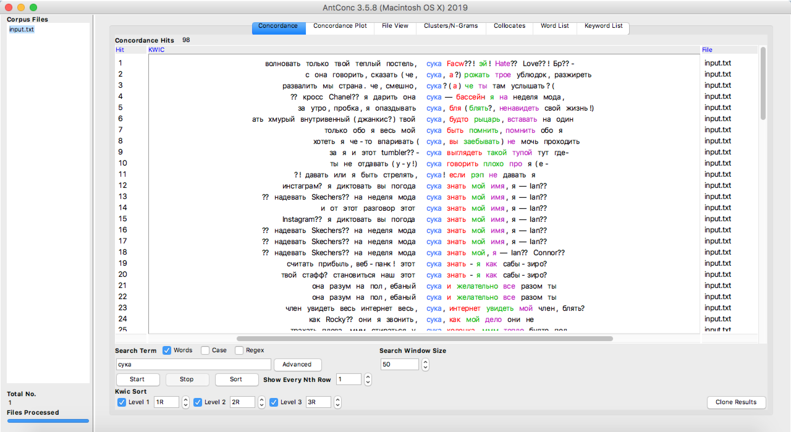
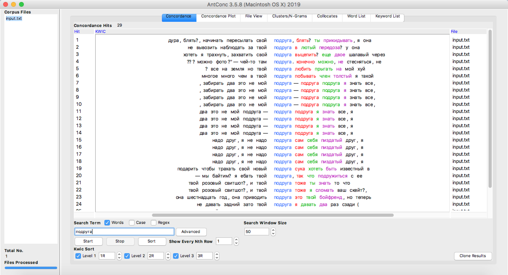
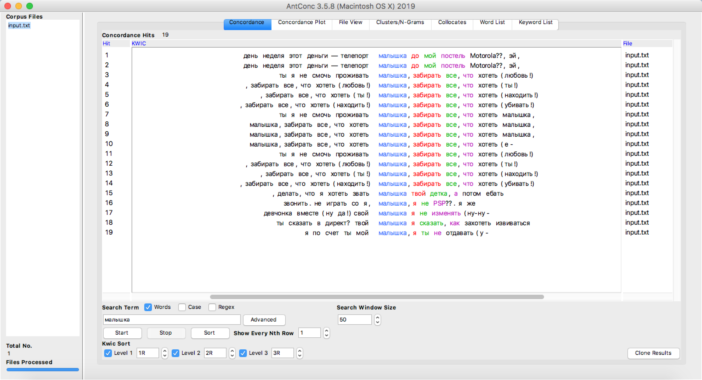
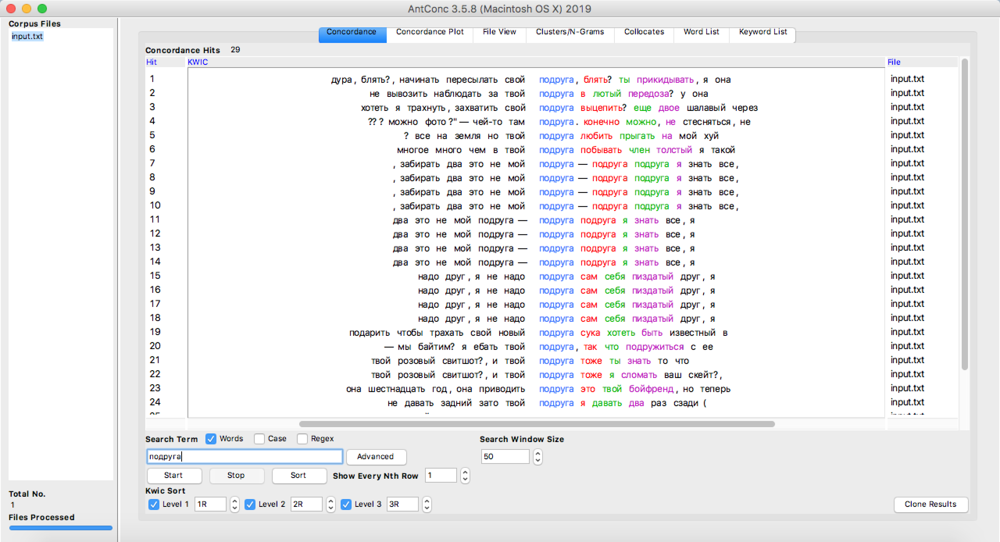
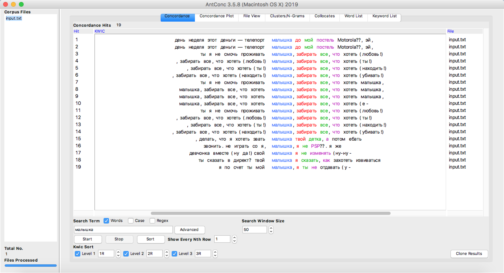

Анализ лексического состава текстов Фейса

! Это исследование про рэп. В тексте присутствует характерная для жанра ненормативная лексика
Иван Дрёмин, известный как Face — один из самых интересных представителей современной российской рэп-культуры. Начав карьеру как исполнитель трэп и клауд рэпа, на тот момент наиболее популярных жанров хип-хопа, он довольно быстро прославился незамысловатыми бэнгерами, тематика которых сфокусирована преимущественно вокруг современной западной поп- и рэп-культуры. В 2018 году Face довольно резко и неожиданно сменил творческий вектор, выпустив альбом «Пути неисповедимы» — 8 остросоциальных треков о государстве, тюрьме, рамках закона и Боге. Социально-политическая рефлексия, прежде несвойственная автору, явно выделяет «Пути неисповедимы» из всего творчества рэпера. В 2019 году Face записал саундтрек для заключительных титров фильма Михаила Идова «Юморист», который сюжетно перекликается с предыдущим релизом рэпера. Цель моего проекта — проследить эволюцию лексики в текстах автора, выделить основные темы, поднимающиеся в треках Фейса, определить лексические особенности, характерные для каждого периода творчества, уровень словарного запаса рэпера и количество уникальных слов в текстах.
Как появилась идея создать этот проект?
Изначально я хотела узнать, какие марки одежды чаще всего упоминаются в текстах современных российских рэперов, но эта задача оказалась слишком объемной, и было решено сузить тему до исследования текстов одного конкретного исполнителя. Я не поклонница Фейса, но мне нравится посыл его последних работ. Да, художественная ценность его треков зачастую сомнительна, но я не уверена, что среди русских артистов найдется другой такой человек, столь резко изменивший концепцию своего творчества.
Этапы работы над проектом
- Создание корпуса (на базе текстов, опубликованных на сервисе Яндекс.Музыка; корпус не включает фиты — композиции других авторов, в которых исполнитель участвует в качестве приглашенный артист)
- Лемматизация текстов в программе Mystem
- Анализ текстов в программе AntConc: составление частотного списка слов, составление списка самых часто упоминаемых брендов, анализ конкордансов слов, называющих женщин
- Анализ текстов на сайте Voyant Tools: квантитативная характеристика корпуса, анализ разнообразия словарного запаса исполнителя, составление облаков слов для каждого года
1. Mystem
2. AntConc
Самые популярные слова
Здесь я использовала инструмент Word List, исключив слова из стоп-списка для русского языка
Топ-5:
- Face (124 раза)
- Эй (119 раз)
- С*ка (98 раз)
- *бать (85 раз)
- Ха (65 раз)

Самые часто упоминаемые бренды
Для составления списка самых часто упоминающихся в текстах исполнителя марок одежды я вручную составила список брендов и использовала инструмент AntConc Word List Range —> Use a specific words below
Топ-5:
- Supreme (29 раз)
- Yeezy Bost (28 раз)
- Гоша Рубчинский (26 раз)
- Gucci (22 раза)
- Vans (13 раз)

Конкордансы слов, называющих женщин
 



3. Voyant Tools
Предварительные наблюдения:
- Общее количество слов в корпусе — 21 171, из них уникальных словоформ (если словоформа встречается в тексе два и более раза, она считается один раз) — 4 266 слов
- Больше всего слов Face написал в 2017 году: 8694 слова — больше 1/3 от общего объема корпуса; меньше всего слов написано в 2018 году (2836 слов)
- При этом самые высокие показатели vocabulary density (относительная единица рассчета разнообразности словарного запаса) характерны для 2015 и 2018 годов, а самые низкие показатели — в 2017 году
Облака слов


Какие выводы из этого можно сделать?
В целом, лексика Фейса не отличается разнообразием, а его треки едва ли выделяются из общего объема трэп- и клауд-рэп текстов. Облака слов и word list наглядно иллюстрируют, что тематически треки исполнителя не сильно отличаются от творчества других представителей жанров: музыканта волнуют деньги, женщины (слова, описывающие девушек, подчеркнуто уничижительные или несут снисходительную эмоциональную окраску) , популярность, маркеры статуса (четыре из пяти самых часто встречающихся в его текстах упоминаний брендов — это люкс или дорогой стритвир, при этом упоминаются только самые продаваемые марки 2010-х). Примечательно, что тексты не отличаются замысловатой структурой, характерны частые повторы слов и отдельных фраз. Чем больше треков было выпущено за год, тем менее оригинальный лексический состав текстов. В год релиза самых популярных бэнгеров — "Бургер" и "Я роняю Запад" (2017) — отмечается самый низкий показатель vocabulary density, в то время как в 2015 (год начала карьеры) и 2018 (выход альбома "Пути неисповедимы") годах эти показатели самые высокие за весь период творчества Фейса. Из этого можно сделать вывод, что чем меньше треков рэпер выпускает, тем тщательнее он работает над смысловым наполнением текстов. Социально-политическое творчество исполнителя куда изящнее и уникальнее, чем его самые популярные композиции и альбомы, но на данный момент попросту теряются в общей массе довольно тривиальных и бесхитростных песен.